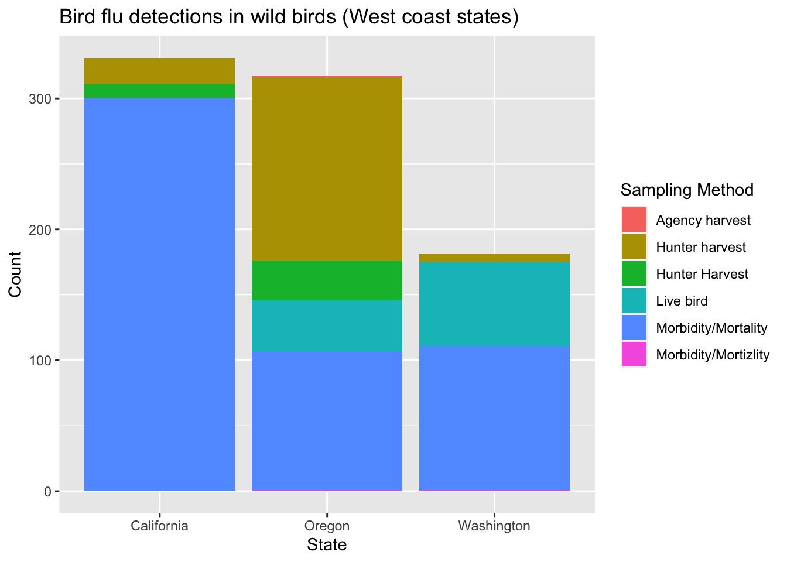
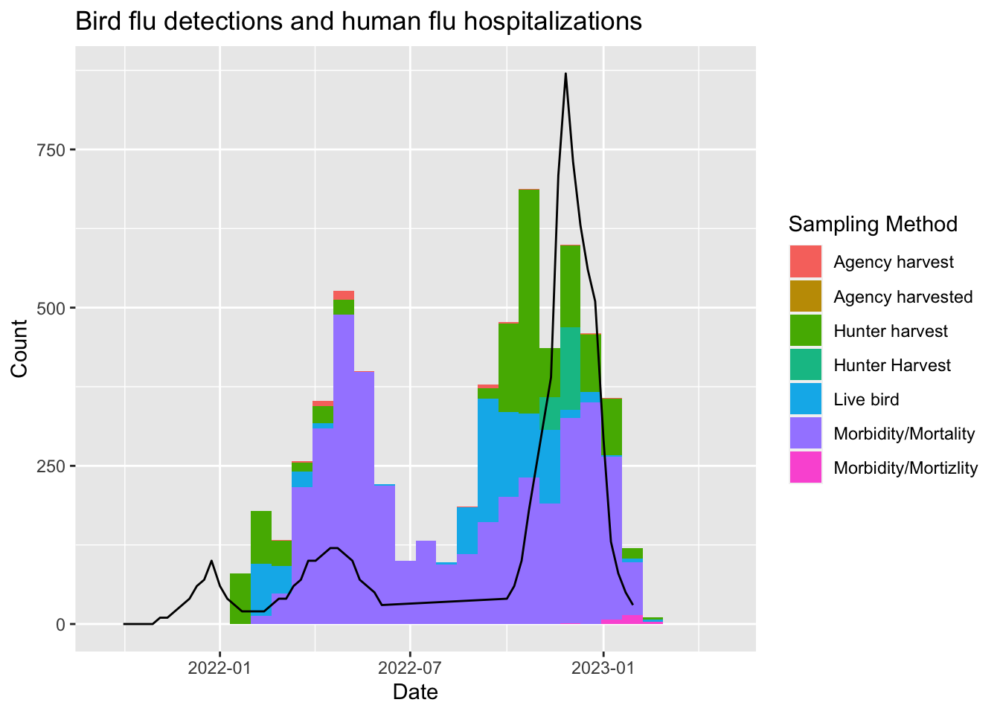

4 Examples
We have covered enough of the grammar of graphics that you should begin to see the patterns in how it is used to express graphical ideas for ggplot2. Here, we will work through some examples.
4.1 Bird Flu mortality
People mail dead birds to the USDA and USGS, where scientists analyze the birds to find out why they died. Right now there is a bird flu epidemic, and the USDA provides public data about the birds in whom the disease has been detected. You can access the data here: https://www.aphis.usda.gov/aphis/ourfocus/animalhealth/animal-disease-information/avian/avian-influenza/hpai-2022/2022-hpai-wild-birds. We will load the data and do some visualization.
# load data directly from the USDA website
flu = read_csv( url("https://www.aphis.usda.gov/animal_health/data-csv/hpai-wild-birds-ver2.csv"))## Rows: 6192 Columns: 8
## ── Column specification ───────────────────────────────────────────────────────────────────────
## Delimiter: ","
## chr (8): State, County, Date Detected, HPAI Strain, Bird Species, WOAH Class...
##
## ℹ Use `spec()` to retrieve the full column specification for this data.
## ℹ Specify the column types or set `show_col_types = FALSE` to quiet this message.flu$date = mdy(flu$`Date Detected`)
# plot a histogram of when bird flu was detected
ggplot(flu) +
aes(x=date) +
geom_histogram() +
ggtitle( "Bird flu detections in wild birds") +
xlab("Date") +
ylab("Count")## `stat_bin()` using `bins = 30`. Pick better value with `binwidth`.# plot a histogram of when bird flu was detected
ggplot(flu) +
aes(x=date, fill=`Sampling Method`) +
geom_histogram() +
ggtitle( "Bird flu detections in wild birds") +
xlab("Date") +
ylab("Count")## `stat_bin()` using `bins = 30`. Pick better value with `binwidth`.# bar chart shows how the bird flu reports compare between west coast states
subset(flu, State %in% c("California", "Oregon", "Washington")) |>
ggplot() +
aes(x=State, fill=`Sampling Method`) +
stat_count() +
geom_bar() +
ggtitle( "Bird flu detections in wild birds (West coast states)") +
ylab("Count")
Let’s compare the bird flu season to the human flu season. Download hospitalization data for the 2021-2022 and 2022-2023 flu seasons from the CDC website here: https://gis.cdc.gov/GRASP/Fluview/FluHospRates.html (the download button is at the top right and you need to specify which seasons to download).
## Warning: One or more parsing issues, call `problems()` on your data frame for details, e.g.:
## dat <- vroom(...)
## problems(dat)## Rows: 1538 Columns: 10
## ── Column specification ───────────────────────────────────────────────────────────────────────
## Delimiter: ","
## chr (8): CATCHMENT, NETWORK, YEAR, AGE CATEGORY, SEX CATEGORY, RACE CATEGORY...
## dbl (2): MMWR-YEAR, MMWR-WEEK
##
## ℹ Use `spec()` to retrieve the full column specification for this data.
## ℹ Specify the column types or set `show_col_types = FALSE` to quiet this message.cdc$date = as_date("1950-01-01")
year(cdc$date) = cdc$`MMWR-YEAR`
week(cdc$date) = cdc$`MMWR-WEEK`
# get flu hospitalization counts that include all race, sex, and age categories
cdc_overall = subset(cdc,
`AGE CATEGORY`=="Overall" &
`SEX CATEGORY`=="Overall" &
`RACE CATEGORY`=="Overall")
# convert the counts to cases per 10 million
cdc_overall$`WEEKLY RATE` = as.numeric(cdc_overall$`WEEKLY RATE`) * 100## Warning: NAs introduced by coercion# remake the plot but add a new geom_line() with its own data
ggplot(flu) +
aes(x=date, fill=`Sampling Method`) +
geom_histogram() +
geom_line(data=cdc_overall, mapping=aes(x=date, y=`WEEKLY RATE`), inherit.aes=FALSE) +
ggtitle("Bird flu detections and human flu hospitalizations") +
xlab("Date") +
ylab("Count")## `stat_bin()` using `bins = 30`. Pick better value with `binwidth`.## Warning: Removed 12 rows containing missing values (`geom_line()`).
4.2 Small business loans
The US Small Business Administration (SBA) maintains data on the loans it offers to businesses. Data about loans made since 2020 can be found at https://data.sba.gov/dataset/7-a-504-foia. We’ll load that data and then explore some ways to visualize it.
# load the small business loan data
sba = read_csv( url("https://data.sba.gov/dataset/0ff8e8e9-b967-4f4e-987c-6ac78c575087/resource/c71ba6cf-b4e0-4e60-98f0-48aeaf4c6460/download/foia-7afy2020-present-asof-221231.csv"))## Rows: 154807 Columns: 39
## ── Column specification ───────────────────────────────────────────────────────────────────────
## Delimiter: ","
## chr (27): Program, BorrName, BorrStreet, BorrCity, BorrState, BorrZip, BankN...
## dbl (12): AsOfDate, BankFDICNumber, BankNCUANumber, GrossApproval, SBAGuaran...
##
## ℹ Use `spec()` to retrieve the full column specification for this data.
## ℹ Specify the column types or set `show_col_types = FALSE` to quiet this message.## # A tibble: 6 × 39
## AsOfDate Program BorrName BorrS…¹ BorrC…² BorrS…³ BorrZip BankN…⁴ BankF…⁵
## <dbl> <chr> <chr> <chr> <chr> <chr> <chr> <chr> <dbl>
## 1 20221231 7A Mark Dusa 3623 S… Sylvan… OH 43560 The Hu… 6560
## 2 20221231 7A Shaddai Harr… 614 Va… Arling… TX 76018 People… NA
## 3 20221231 7A Aqualon Inc. 7180 A… Tipp C… OH 45371 The Hu… 6560
## 4 20221231 7A Redline Rest… 2450 C… Saint … FL 34772 SouthS… 33555
## 5 20221231 7A Meluota Corp 2702 A… ASTORIA NY 11102 Santan… 29950
## 6 20221231 7A Sky Lake Vac… 15 Nes… Laconia NH 03246 TD Ban… 18409
## # … with 30 more variables: BankNCUANumber <dbl>, BankStreet <chr>,
## # BankCity <chr>, BankState <chr>, BankZip <chr>, GrossApproval <dbl>,
## # SBAGuaranteedApproval <dbl>, ApprovalDate <chr>, ApprovalFiscalYear <dbl>,
## # FirstDisbursementDate <chr>, DeliveryMethod <chr>, subpgmdesc <chr>,
## # InitialInterestRate <dbl>, TermInMonths <dbl>, NaicsCode <dbl>,
## # NaicsDescription <chr>, FranchiseCode <chr>, FranchiseName <chr>,
## # ProjectCounty <chr>, ProjectState <chr>, SBADistrictOffice <chr>, …# boxplot of loan sizes by business type
subset( sba, ProjectState=="CA" ) |>
ggplot() +
aes(x=BusinessType, y=SBAGuaranteedApproval) +
geom_boxplot() +
scale_y_log10() +
ggtitle("Small Business Administraton guaranteed loans in California") +
ylab("Loan guarantee (dollars)")# relationship between loan size and interest rate
subset( sba, ProjectState=="CA" ) |>
ggplot() +
aes(x=GrossApproval, y=InitialInterestRate, ) +
geom_point() +
facet_wrap(~BusinessType, ncol=3) +
scale_x_log10() +
ggtitle("Interest rate as a function of loan size") +
xlab("Loan size (dollars)") +
ylab("Interest rate (%)")Now let’s see how we can add aesthetic mappings to a plot in order to convey information on a new dimension. In this case, we will color the points by the loan status. If the default colors aren’t working for you, ggplot2 can integrate directly with Color Brewer (colorbrewer2.org). A smoother can help indicate differences that would otherwise be lost in the noise.
# color the dots by the oan status.
subset( sba, ProjectState=="CA" & LoanStatus != "EXEMPT" & LoanStatus != "CHGOFF" ) |>
ggplot() +
aes(x=GrossApproval, y=InitialInterestRate, color=LoanStatus) +
geom_point() +
geom_smooth() +
facet_wrap(~BusinessType, ncol=3) +
scale_x_log10() +
ggtitle("Interest rate as a function of loan size by loan status") +
xlab("Loan size (dollars)") +
ylab("Interest rate (%)") +
labs( color="Loan status") +
scale_color_brewer(type="qual", palette="Accent")## `geom_smooth()` using method = 'gam' and formula = 'y ~ s(x, bs = "cs")'